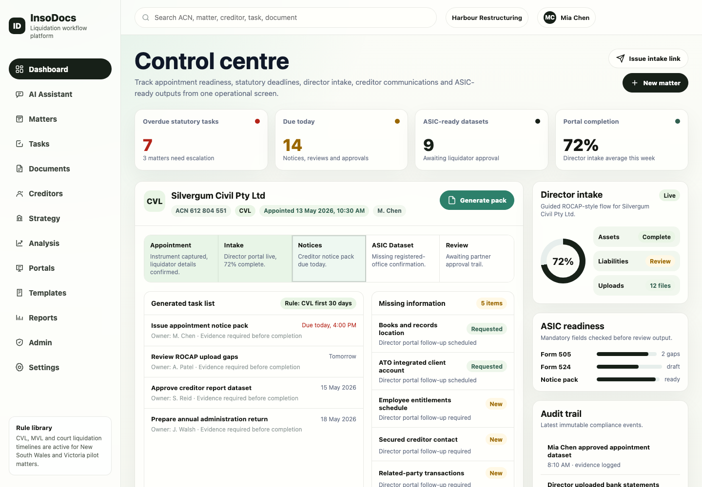
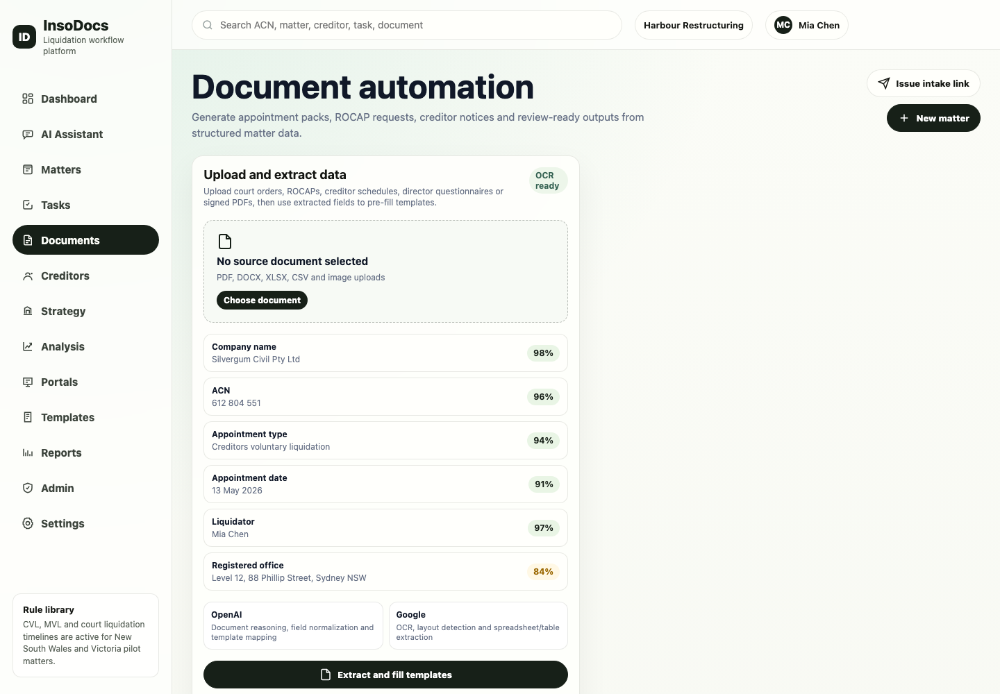
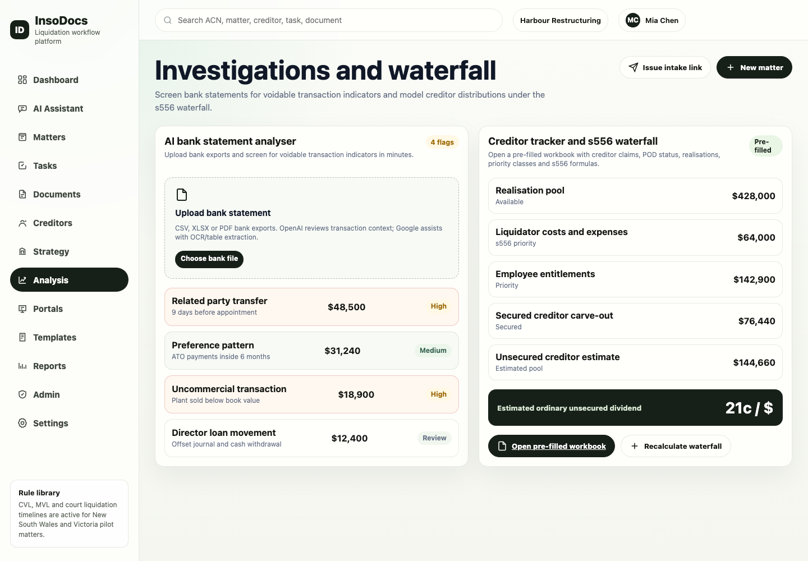
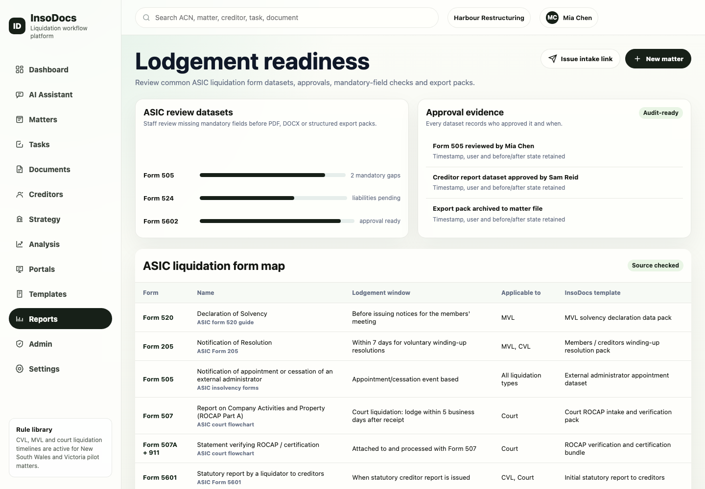

First circular, ASIC notice, bank freeze letter and director questionnaire.
Liquidation administration, ready from day one
InsoDocs helps Australian liquidators capture appointment data once, generate Day 1 documents, guide statutory workflows, analyse bank statements and model creditor distributions from one clean workspace.
Capture once
Act faster
Stay compliant
Matter control centre
Appointment: 13 May 2026
Guidance includes follow-up questions and document links.
Preference, related-party and unusual payment patterns surfaced.
Priority claims and ordinary unsecured dividend modelled.
ASIC-ready checklist
- Form 505 appointment notice ready
- Form 5601 creditor report dataset in progress
- Form 5603 end administration return planned
Creditor snapshot
- Total creditors
- 87
- Proofs received
- 41
- Under review
- 7
What InsoDocs does
The platform is designed for the first 30 days of a liquidation: intake, documents, deadlines, creditor data and review-ready outputs.
Capture appointment data once
Company, director, creditor, employee, asset and liability information becomes reusable matter data.
Generate the Day 1 pack
Create court liquidation documents, notices, questionnaires and creditor communications from merge fields.
Run the workflow
Appointment type drives checklists, owners, due dates, evidence requirements and overdue alerts.
Prepare ASIC-ready outputs
Review mandatory data, approvals and export packs before staff complete lodgement steps.
See the workspace before you join
The landing page stays standalone, but these product views show the core surfaces practitioners will use every day.
Dashboard
Every matter, deadline and missing item in one control centre.

Documents
Generate the court liquidation Day 1 pack from approved matter data.

Analysis
Screen statements for voidable transaction indicators in minutes.

Reports
Prepare ASIC-ready datasets, approval evidence and internal strategy reports.

Built for liquidation teams that need control quickly
InsoDocs is not trying to replace every practice system on day one. It gives boutique and mid-market insolvency teams a faster way to bring a new matter under administrative control.
- New matter setup for CVL, MVL and court liquidation
- Director portal for structured intake and document uploads
- Workflow stages with checklists and linked templates
- Creditor register, proofs of debt and communications tracking
- Audit trail for every key action and approval
First 30 days
- AppointmentMatter created and deadlines generated.
- Day 1 packCore documents prepared from approved data.
- IntakeDirectors upload records and answer guided questions.
- InvestigationBank statements screened for voidable transaction indicators.
- Creditor controlClaims, priorities and s556 waterfall tracked.
AI guidance that understands the liquidation workflow
The AI Assistant is built to help practitioners move through the matter, not just answer generic questions. It can explain the next step, draft practical guidance, point to the right template and ask the follow-up question that keeps the file moving.
Matter-specific prompts
Document links
Follow-up questions
Workflow guidance
Investigations and creditor outcomes in one place
InsoDocs brings bank statement screening and creditor waterfall modelling into the same workspace as the documents and deadlines.
AI bank statement analyser
Upload bank statements and screen for potential preference payments, related-party transfers, unusual withdrawals and other voidable transaction indicators in minutes rather than days.
Related party transferHigh
ATO payment patternReview
Asset sale below bookHigh
Creditor tracker and s556 waterfall
Track claims, proof status, priority categories, admissions and dividend estimates with a pre-filled workbook and in-app model.
Estimated ordinary unsecured dividend
21c / $
Internal strategy report
Prepare a practical strategy report with appointment status, priority risks, document readiness, investigation findings and recommended next actions for partner review.
Join the InsoDocs waitlist
We are preparing pilot access for Australian insolvency practitioners and teams that want faster liquidation administration from appointment through the first 30 days.